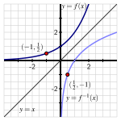
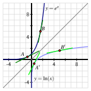
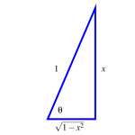
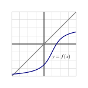

What is the derivative of the natural logarithm function?
What are the derivatives of the inverse trigonometric functions \(\arcsin(x)\) and \(\arctan(x)\text{?}\)
If \(g\) is the inverse of a differentiable function \(f\text{,}\) how is \(g'\) computed in terms of \(f\text{,}\)\(f'\text{,}\) and \(g\text{?}\)
Much of mathematics centers on the notion of function. Indeed, throughout our study of calculus, we are investigating the behavior of functions, with particular emphasis on how fast the output of the function changes in response to changes in the input. Because each function represents a process, a natural question to ask is whether or not the particular process can be reversed. That is, if we know the output that results from the function, can we determine the input that led to it? And if we know how fast a particular process is changing, can we determine how fast the inverse process is changing?
One of the most important functions in all of mathematics is the natural exponential function \(f(x) = e^x\text{.}\) Its inverse, the natural logarithm, \(g(x) = \ln(x)\text{,}\) is similarly important. One of our goals in this section is to learn how to differentiate the logarithm function. First, we review some of the basic concepts surrounding functions and their inverses.
Preview Activity2.6.1.
The equation \(y = \frac{5}{9}(x-32)\) relates a temperature given in \(x\) degrees Fahrenheit to the corresponding temperature \(y\) measured in degrees Celsius.
Solve the equation \(y = \frac{5}{9}(x-32)\) for \(x\) to write \(x\) (Fahrenheit temperature) in terms of \(y\) (Celsius temperature).
Let \(C(x) = \frac{5}{9}(x-32)\) be the function that takes a Fahrenheit temperature as input and produces the Celsius temperature as output. In addition, let \(F(y)\) be the function that converts a temperature given in \(y\) degrees Celsius to the temperature \(F(y)\) measured in degrees Fahrenheit. Use your work in (a) to write a formula for \(F(y)\text{.}\)
Next consider the new function defined by \(p(x) = F(C(x))\text{.}\) Use the formulas for \(F\) and \(C\) to determine an expression for \(p(x)\) and simplify this expression as much as possible. What do you observe?
Now, let \(r(y) = C(F(y))\text{.}\) Use the formulas for \(F\) and \(C\) to determine an expression for \(r(y)\) and simplify this expression as much as possible. What do you observe?
What is the value of \(C'(x)\text{?}\) of \(F'(y)\text{?}\) How do these values appear to be related?
Subsection2.6.1Basic facts about inverse functions
A function \(f : A \to B\) is a rule that associates each element in the set \(A\) to one and only one element in the set \(B\text{.}\) We call \(A\) the domain of \(f\) and \(B\) the codomain of \(f\text{.}\) If there exists a function \(g : B \to A\) such that \(g(f(a)) = a\) for every possible choice of \(a\) in the set \(A\) and \(f(g(b)) = b\) for every \(b\) in the set \(B\text{,}\) then we say that \(g\) is the inverse of \(f\text{.}\)
We often use the notation \(f^{-1}\) (read “\(f\)-inverse”) to denote the inverse of \(f\text{.}\) The inverse function undoes the work of \(f\text{.}\) Indeed, if \(y = f(x)\text{,}\) then
Thus, the equations \(y = f(x)\) and \(x = f^{-1}(y)\) say the same thing. The only difference between the two equations is one of perspective — one is solved for \(x\text{,}\) while the other is solved for \(y\text{.}\)
Here we briefly remind ourselves of some key facts about inverse functions.
Note2.6.1.
For a function \(f : A \to B\text{,}\)
\(f\) has an inverse if and only if \(f\) is one-to-one 1 and onto 2 ;
provided \(f^{-1}\) exists, the domain of \(f^{-1}\) is the codomain of \(f\text{,}\) and the codomain of \(f^{-1}\) is the domain of \(f\text{;}\)
\(f^{-1}(f(x)) = x\) for every \(x\) in the domain of \(f\) and \(f(f^{-1}(y)) = y\) for every \(y\) in the codomain of \(f\text{;}\)
\(y = f(x)\) if and only if \(x = f^{-1}(y)\text{.}\)
The last fact reveals a special relationship between the graphs of \(f\) and \(f^{-1}\text{.}\) If a point \((x,y)\) that lies on the graph of \(y = f(x)\text{,}\) then it is also true that \(x = f^{-1}(y)\text{,}\) which means that the point \((y,x)\) lies on the graph of \(f^{-1}\text{.}\) This shows us that the graphs of \(f\) and \(f^{-1}\) are the reflections of each other across the line \(y = x\text{,}\) because this reflection is precisely the geometric action that swaps the coordinates in an ordered pair. In Figure 2.6.2, we see this illustrated by the function \(y = f(x) = 2^x\) and its inverse, with the points \((-1,\frac{1}{2})\) and \((\frac{1}{2},-1)\) highlighting the reflection of the curves across \(y = x\text{.}\)

Figure2.6.2.A graph of a function \(y = f(x)\) along with its inverse, \(y = f^{-1}(x)\text{.}\)
To close our review of important facts about inverses, we recall that the natural exponential function \(y = f(x) = e^x\) has an inverse function, namely the natural logarithm, \(x = f^{-1}(y) = \ln(y)\text{.}\) Thus, writing \(y = e^x\) is interchangeable with \(x = \ln(y)\text{,}\) plus \(\ln(e^x) = x\) for every real number \(x\) and \(e^{\ln(y)} = y\) for every positive real number \(y\text{.}\)
Subsection2.6.2The derivative of the natural logarithm function
In what follows, we find a formula for the derivative of \(g(x) = \ln(x)\text{.}\) To do so, we take advantage of the fact that we know the derivative of the natural exponential function, the inverse of \(g\text{.}\) In particular, we know that writing \(g(x) = \ln(x)\) is equivalent to writing \(e^{g(x)} = x\text{.}\) Now we differentiate both sides of this equation and observe that
For all positive real numbers \(x\text{,}\)\(\frac{d}{dx}[\ln(x)] = \frac{1}{x}\text{.}\)
This rule for the natural logarithm function now joins our list of basic derivative rules. Note that this rule applies only to positive values of \(x\text{,}\) as these are the only values for which \(\ln(x)\) is defined.
Also notice that for the first time in our work, differentiating a basic function of a particular type has led to a function of a very different nature: the derivative of the natural logarithm is not another logarithm, nor even an exponential function, but rather a rational one.
Derivatives of logarithms may now be computed in concert with all of the rules known to date. For instance, if \(f(t) = \ln(t^2 + 1)\text{,}\) then by the chain rule, \(f'(t) = \frac{1}{t^2 + 1} \cdot 2t\text{.}\)
There are interesting connections between the graphs of \(f(x) = e^x\) and \(f^{-1}(x) = \ln(x)\text{.}\)
In Figure 2.6.3, we are reminded that since the natural exponential function has the property that its derivative is itself, the slope of the tangent to \(y = e^x\) is equal to the height of the curve at that point. For instance, at the point \(A = (\ln(0.5), 0.5)\text{,}\) the slope of the tangent line is \(m_A = 0.5\text{,}\) and at \(B = (\ln(5), 5)\text{,}\) the tangent line’s slope is \(m_B = 5\text{.}\)
Figure2.6.3.A graph of the function \(y = e^x\) along with its inverse, \(y = \ln(x)\text{,}\) where both functions are viewed using the input variable \(x\text{.}\)
At the corresponding points \(A'\) and \(B'\) on the graph of the natural logarithm function (which come from reflecting \(A\) and \(B\) across the line \(y = x\)), we know that the slope of the tangent line is the reciprocal of the \(x\)-coordinate of the point (since \(\frac{d}{dx}[\ln(x)] = \frac{1}{x}\)). Thus, at \(A' = (0.5, \ln(0.5))\text{,}\) we have \(m_{A'} = \frac{1}{0.5} = 2\text{,}\) and at \(B' = (5, \ln(5))\text{,}\)\(m_{B'} = \frac{1}{5}\text{.}\)
In particular, we observe that \(m_{A'} = \frac{1}{m_A}\) and \(m_{B'} = \frac{1}{m_B}\text{.}\) This is not a coincidence, but in fact holds for any curve \(y = f(x)\) and its inverse, provided the inverse exists. This is due to the reflection across \(y = x\text{.}\) It changes the roles of \(x\) and \(y\text{,}\) thus reversing the rise and run, so the slope of the inverse function at the reflected point is the reciprocal of the slope of the original function.
Activity2.6.2.
For each function given below, find its derivative.
\(\displaystyle h(x) = x^2\ln(x)\)
\(\displaystyle p(t) = \frac{\ln(t)}{e^t + 1}\)
\(\displaystyle s(y) = \ln(\cos(y) + 2)\)
\(\displaystyle z(x) = \tan(\ln(x))\)
\(\displaystyle m(z) = \ln(\ln(z))\)
Subsection2.6.3Inverse trigonometric functions and their derivatives
Trigonometric functions are periodic, so they fail to be one-to-one, and thus do not have inverse functions. However, we can restrict the domain of each trigonometric function so that it is one-to-one on that domain.
For instance, consider the sine function on the domain \([-\frac{\pi}{2}, \frac{\pi}{2}]\text{.}\) Because no output of the sine function is repeated on this interval, the function is one-to-one and thus has an inverse. Thus, the function \(f(x) = \sin(x)\) with \([-\frac{\pi}{2}, \frac{\pi}{2}]\) and codomain \([-1,1]\) has an inverse function \(f^{-1}\) such that
We call \(f^{-1}\) the arcsine (or inverse sine) function and write \(f^{-1}(y) = \arcsin(y)\text{.}\) It is especially important to remember that
\begin{equation*}
y = \sin(x) \ \ \text{and} \ \ x = \arcsin(y)
\end{equation*}
say the same thing. “The arcsine of \(y\)” means “the angle whose sine is \(y\text{.}\)” For example, \(\arcsin(\frac{1}{2}) = \frac{\pi}{6}\) means that \(\frac{\pi}{6}\) is the angle whose sine is \(\frac{1}{2}\text{,}\) which is equivalent to writing \(\sin(\frac{\pi}{6}) = \frac{1}{2}\text{.}\)
Figure2.6.4.A graph of \(f(x) = \sin(x)\) (in blue), restricted to the domain \([-\frac{\pi}{2}, \frac{\pi}{2}]\text{,}\) along with its inverse, \(f^{-1}(x) = \arcsin(x)\) (in magenta).
Next, we determine the derivative of the arcsine function. Letting \(h(x) = \arcsin(x)\text{,}\) our goal is to find \(h'(x)\text{.}\) Since \(h(x)\) is the angle whose sine is \(x\text{,}\) it is equivalent to write
Finally, we recall that \(h(x) = \arcsin(x)\text{,}\) so the denominator of \(h'(x)\) is the function \(\cos(\arcsin(x))\text{,}\) or in other words, “the cosine of the angle whose sine is \(x\text{.}\)” A bit of right triangle trigonometry allows us to simplify this expression considerably.
Let’s say that \(\theta = \arcsin(x)\text{,}\) so that \(\theta\) is the angle whose sine is \(x\text{.}\) We can picture \(\theta\) as an angle in a right triangle with hypotenuse \(1\) and a vertical leg of length \(x\text{,}\) as shown in Figure 2.6.5. The horizontal leg must be \(\sqrt{1-x^2}\text{,}\) by the Pythagorean Theorem.
Figure2.6.5.The right triangle that corresponds to the angle \(\theta = \arcsin(x)\text{.}\)
Now, because \(\theta = \arcsin(x)\text{,}\) the expression for \(\cos(\arcsin(x))\) is equivalent to \(\cos(\theta)\text{.}\) From the figure, \(\cos(\arcsin(x)) = \cos(\theta) = \sqrt{1-x^2}\text{.}\)
Substituting this expression into our formula, \(h'(x) = \frac{1}{\cos(\arcsin(x))}\text{,}\) we have now shown that
The following prompts in this activity will lead you to develop the derivative of the inverse tangent function.
Let \(r(x) = \arctan(x)\text{.}\) Use the relationship between the arctangent and tangent functions to rewrite this equation using only the tangent function.
Differentiate both sides of the equation you found in (a). Solve the resulting equation for \(r'(x)\text{,}\) writing \(r'(x)\) as simply as possible in terms of a trigonometric function evaluated at \(r(x)\text{.}\)
Recall that \(r(x) = \arctan(x)\text{.}\) Update your expression for \(r'(x)\) so that it only involves trigonometric functions and the independent variable \(x\text{.}\)
Introduce a right triangle with angle \(\theta\) so that \(\theta = \arctan(x)\text{.}\) What are the three sides of the triangle?
In terms of only \(x\) and \(1\text{,}\) what is the value of \(\cos(\arctan(x))\text{?}\)
Use the results of your work above to find an expression involving only \(1\) and \(x\) for \(r'(x)\text{.}\)
While derivatives for other inverse trigonometric functions can be established similarly, for now we limit ourselves to the arcsine and arctangent functions.
Activity2.6.4.
Determine the derivative of each of the following functions.
Subsection2.6.4The link between the derivative of a function and the derivative of its inverse
In Figure 2.6.3, we saw an interesting relationship between the slopes of tangent lines to the natural exponential and natural logarithm functions at points reflected across the line \(y = x\text{.}\) In particular, we observed that at the point \((\ln(2), 2)\) on the graph of \(f(x) = e^x\text{,}\) the slope of the tangent line is \(f'(\ln(2)) = 2\text{,}\) while at the corresponding point \((2, \ln(2))\) on the graph of \(f^{-1}(x) = \ln(x)\text{,}\) the slope of the tangent line is \((f^{-1})'(2) = \frac{1}{2}\text{,}\) which is the reciprocal of \(f'(\ln(2))\text{.}\)
That the two corresponding tangent lines have reciprocal slopes is not a coincidence. If \(f\) and \(g\) are differentiable inverse functions, then \(y = f(x)\) if and only if \(x = g(y)\text{,}\) then\(f(g(x)) = x\) for every \(x\) in the domain of \(f^{-1}\text{.}\) Differentiating both sides of this equation, we have
Solving for \(g'(x)\text{,}\) we have \(g'(x) = \frac{1}{f'(g(x))}\text{.}\) Here we see that the slope of the tangent line to the inverse function \(g\) at the point \((x,g(x))\) is precisely the reciprocal of the slope of the tangent line to the original function \(f\) at the point \((g(x),f(g(x))) = (g(x),x)\text{.}\)
Figure2.6.6.A graph of function \(y = f(x)\) along with its inverse, \(y = g(x) = f^{-1}(x)\text{.}\) Observe that the slopes of the two tangent lines are reciprocals of one another.
To see this more clearly, consider the graph of the function \(y = f(x)\) shown in Figure 2.6.6, along with its inverse \(y = g(x)\text{.}\) Given a point \((a,b)\) that lies on the graph of \(f\text{,}\) we know that \((b,a)\) lies on the graph of \(g\text{;}\) because \(f(a) = b\) and \(g(b) = a\text{.}\) Now, applying the rule that \(g'(x) = 1/f'(g(x))\) to the value \(x = b\text{,}\) we have
which is precisely what we see in the figure: the slope of the tangent line to \(g\) at \((b,a)\) is the reciprocal of the slope of the tangent line to \(f\) at \((a,b)\text{,}\) since these two lines are reflections of one another across the line \(y = x\text{.}\)
Derivative of an inverse function.
Suppose that \(f\) is a differentiable function with inverse \(g\) and that \((a,b)\) is a point that lies on the graph of \(f\) at which \(f'(a) \ne 0\text{.}\) Then
More generally, for any \(x\) in the domain of \(g'\text{,}\) we have \(g'(x) = 1/f'(g(x))\text{.}\)
The rules we derived for \(\ln(x)\text{,}\)\(\arcsin(x)\text{,}\) and \(\arctan(x)\) are all just specific examples of this general property of the derivative of an inverse function. For example, with \(g(x) = \ln(x)\) and \(f(x) = e^x\text{,}\) it follows that
For all positive real numbers \(x\text{,}\)\(\frac{d}{dx}[\ln(x)] = \frac{1}{x}\text{.}\)
For all real numbers \(x\) such that \(-1 \lt x \lt 1\text{,}\)\(\frac{d}{dx}[\arcsin(x)] = \frac{1}{\sqrt{1-x^2}}\text{.}\) In addition, for all real numbers \(x\text{,}\)\(\frac{d}{dx}[\arctan(x)] = \frac{1}{1+x^2}\text{.}\)
If \(g\) is the inverse of a differentiable function \(f\text{,}\) then for any point \(x\) in the domain of \(g'\text{,}\)\(g'(x) = \frac{1}{f'(g(x))}\text{.}\)
Exercises2.6.6Exercises
1.Composite function involving logarithms and polynomials.
Given that \(f(-6.2) = -2.7\) and \(f(-6) = -6.4\text{,}\) approximate \(f'(-6.2)\text{.}\)
\(f'(-6.2) \approx\)
2.Composite function involving trigonometric functions and logarithms.
Functions of the form \(f(x) = x^n\text{,}\) where \(n = 1, 2, 3, \ldots\text{,}\) are often called power functions.
(a) Use the limit definition of the derivative to find \(f'(x)\) for \(f(x)=x^2\text{.}\)
\(f'(x) =\)
(b) Use the limit definition of the derivative to find \(f'(x)\) for \(f(x)=x^3\text{.}\)
\(f'(x) =\)
(c) Use the limit definition of the derivative to find \(f'(x)\) for \(f(x)=x^4\text{.}\) (Hint: \((a + b)^4 = a^4 + 4a^3 b + 6a^2 b^2 + 4ab^3 + b^4\text{.}\) Apply this rule to \((x + h)^4\) within the limit definition.)
\(f'(x) =\)
(d) Based on your work in (a), (b), and (c), what do you conjecture is the derivative of \(f(x) = x^5\text{?}\)
Of \(f(x) = x^{13}\text{?}\)
(e) Conjecture a formula for the derivative of \(f(x) = x^n\) that holds for any positive integer \(n\text{.}\) That is, given \(f(x) = x^n\) where \(n\) is a positive integer, what do you think is the formula for \(f'(x)\text{?}\)
\(f'(x) =\)
3.Product involving \(\arcsin(w)\).
Find the derivative of
\(y = \root 5 \of{x}\text{.}\)
\({dy\over dx} =\)
4.Derivative involving \(\arctan(x)\).
If \(f(x) = x^3 + 3 x^2 - 144 x + 16\text{,}\) find analytically all values of \(x\) for which \(f'(x) = 0\text{.}\) (Enter your answer as a comma separated list of numbers, e.g., -1,0,2)
\(x =\)
5.Composite function from a graph.
Find the derivative of \(\displaystyle f(t) = \frac{t^{5}+t^{6}-1}{t^{7}}\text{.}\)
\(f'(t) =\)
6.Composite function involving an inverse trigonometric function.
Find an equation for the line tangent to the graph of \(f\) at \((2,24)\text{,}\) where \(f\) is given by \(f(x)= 4x^{3}-4x^{2}+8\text{.}\)
\(y =\)
7.Mixing rules: product, chain, and inverse trig.
Certain pieces of antique furniture increased very rapidly in price in the 1970s and 1980s. For example, the value of a particular rocking chair is well approximated by
\begin{equation*}
V = 135 (1.3)^t,
\end{equation*}
where \(V\) is in dollars and \(t\) is the number of years since 1975. Find the rate, in dollars per year, at which the price is increasing.
rate = dollars/yr
8.Mixing rules: product and inverse trig.
Find the derivative of \(f(x)=15 e^x+x^{8}\text{.}\)
\(f'(x) =\)
9.
Determine the derivative of each of the following functions. Use proper notation and clearly identify the derivative rules you use.
Consider the graph of \(y = f(x)\) provided in Figure 2.6.7 and use it to answer the following questions.
Use the provided graph to estimate the value of \(f'(1)\text{.}\)
Sketch an approximate graph of \(y = f^{-1}(x)\text{.}\) Label at least three distinct points on the graph that correspond to three points on the graph of \(f\text{.}\)
Based on your work in (a), what is the value of \((f^{-1})'(-1)\text{?}\) Why?
Figure2.6.7.A function \(y = f(x)\)
11.
Let \(f(x) = \frac{1}{4}x^3 + 4\text{.}\)
Sketch a graph of \(y = f(x)\) and explain why \(f\) is an invertible function.
Let \(g\) be the inverse of \(f\) and determine a formula for \(g\text{.}\)
Compute \(f'(x)\text{,}\)\(g'(x)\text{,}\)\(f'(2)\text{,}\) and \(g'(6)\text{.}\) What is the special relationship between \(f'(2)\) and \(g'(6)\text{?}\) Why?
12.
Let \(h(x) = x + \sin(x)\text{.}\)
Sketch a graph of \(y = h(x)\) and explain why \(h\) must be invertible.
Explain why it does not appear to be algebraically possible to determine a formula for \(h^{-1}\text{.}\)
Observe that the point \((\frac{\pi}{2}, \frac{\pi}{2} + 1)\) lies on the graph of \(y = h(x)\text{.}\) Determine the value of \((h^{-1})'(\frac{\pi}{2} + 1)\text{.}\)